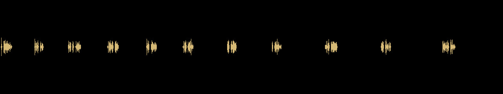

NON-DENSOU · PRIVATE REVIEW · PROVISIONAL AUDIO
3分事件ダイジェスト — A/V continuation
限定受入れ済みの既存 CASE_DIGEST picture・11 review caption・subtitle timing を変更せず、同じ11文を local SAPI で仮ナレーション化した技術review候補です。voice/audio の人間受入れ、rights、production、publication、final canon は未成立です。
Artifactfff-private-raster-case-digest-audio-continuation-20260812-001
Duration180.000s
Audible cues11/11
MP4 SHA-256
cea496c12c7485a47a992877dc2544bff4be9cd6a1a7c7192574adb7215f0c12Audio waveform

Cue sync
| Cue | Shot | Accepted caption | Audio | Exact accepted text | Atempo |
|---|---|---|---|---|---|
| case-digest-caption-01 | shot-b01-01 | 0.00–12.00 | 0.35–4.28 | 正午、鐘のない塔から鐘の音が響いたと報告された。 | 1.000 |
| case-digest-caption-02 | shot-b01-02 | 12.00–24.00 | 12.35–15.56 | 塔の取付枠は空で、鐘は確認できない。 | 1.000 |
| case-digest-caption-03 | shot-b02-01 | 24.00–38.00 | 24.35–28.95 | 時計修理師のミラ・ヴェイルが、失踪した兄の手掛かりを調べる。 | 1.000 |
| case-digest-caption-04 | shot-b02-02 | 38.00–52.00 | 38.35–42.48 | 失踪した兄のメモと真鍮の蛾が、作業台に残されている。 | 1.000 |
| case-digest-caption-05 | shot-b02-03 | 52.00–65.00 | 52.35–56.10 | 時計と記録には、9:17が繰り返し現れる。 | 1.000 |
| case-digest-caption-06 | shot-b03-01 | 65.00–81.00 | 65.35–69.24 | 失踪した兄のメモは、二列の台帳へ調査を導く。 | 1.000 |
| case-digest-caption-07 | shot-b03-02 | 81.00–97.00 | 81.35–84.64 | 台帳には、「分」の欄と人名の欄が並んでいる。 | 1.000 |
| case-digest-caption-08 | shot-b04-01 | 97.00–116.00 | 97.35–100.69 | メモは、市の評議会を調査対象として指している。 | 1.000 |
| case-digest-caption-09 | shot-b04-02 | 116.00–136.00 | 116.35–120.73 | 告発は記録されているが、評議会の関与を裏づける証拠はない。 | 1.000 |
| case-digest-caption-10 | shot-b06-01 | 136.00–158.00 | 136.35–139.88 | 時間と名前は、台帳の二つの損失区分である。 | 1.000 |
| case-digest-caption-11 | shot-b06-03 | 158.00–180.00 | 158.35–162.92 | 音源と関係者を確定できないまま、塔は調査対象として残る。 | 1.000 |
Review boundary
Picture essence exact match: true. Subtitle text/timing exact match: true. The local voice is provisional and not selected for production.